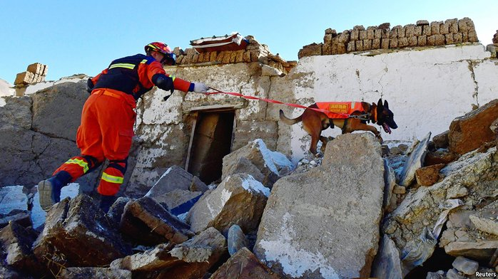

A 7.1 MAGNITUDE EARTHQUAKE struck Tibet on January 7th, killing at least 126 people. The quake’s epi centre was in Dingri county, some 50 miles from the base of Mount Everest and near the holy city of Shigatse. The rumbling was felt in Nepal and parts of India. According to an initial survey, over 3,600 buildings were destroyed. Thousands of rescue workers have descended on Tibet to look for survivors. More than 400 people have already been pulled from the rubble, report Chinese state media. Survivors and rescuers face many challenges, such as freezing temperatures and more seismic activity. Since the initial quake, there have been hundreds of aftershocks, some exceeding a magnitude of 4.0.
The roof of the world shakes
An earthquake in Tibet
Dozens are dead, thousands of buildings have been destroyed
